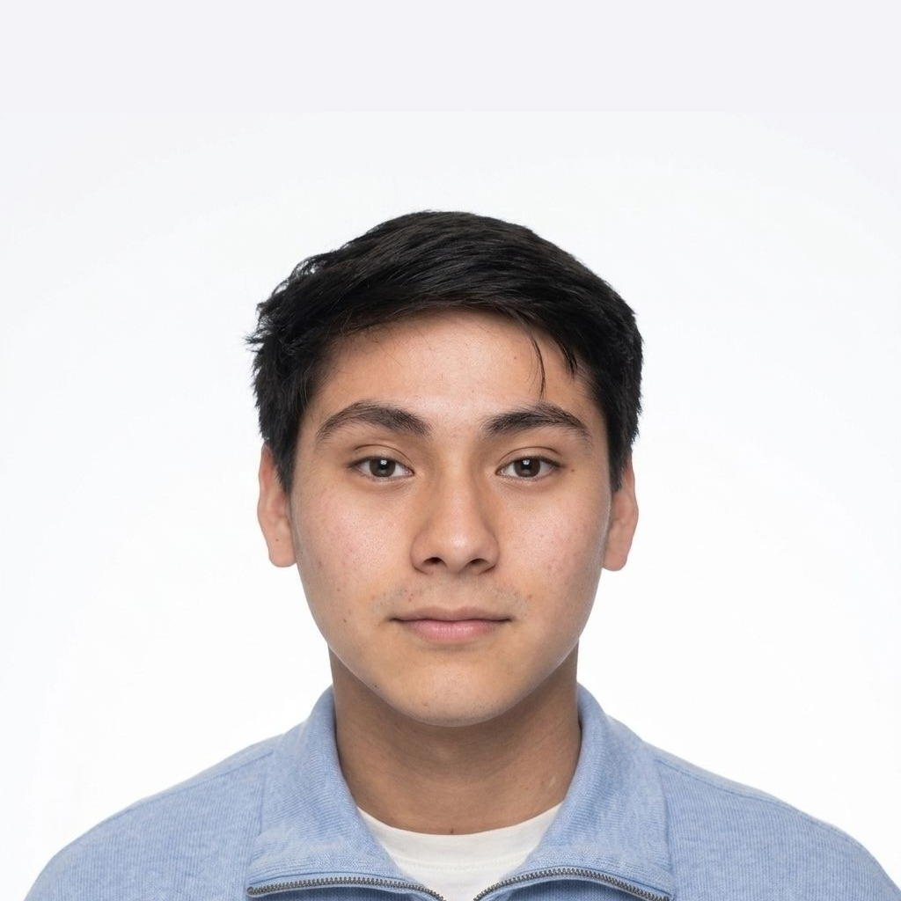
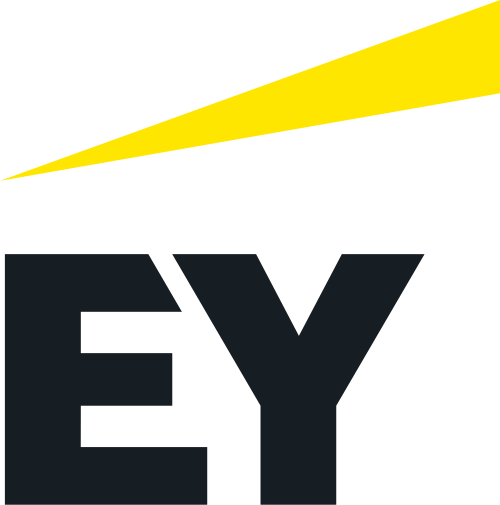
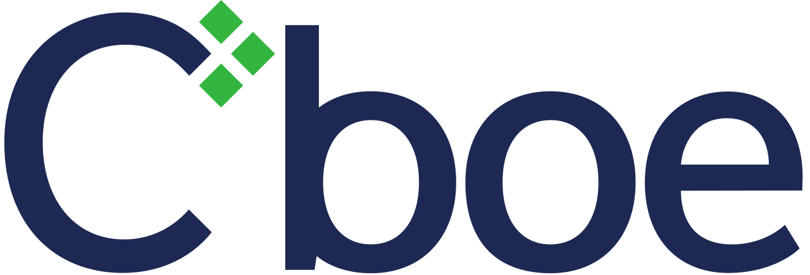

[04]J.P. Morgan Cybersecurity Simulation
Jun 2024
Performed fraud analysis on payment services, built a Django OTP system, and developed an ML-based BEC phishing classifier.
$whoami

Hi, I'm Marcelo. I'm a final-year student, and somewhere along the way security stopped being something I study and became something I genuinely care about. I'm curious by nature, I keep up closely with what's happening in the world, and I ask a lot of questions. Lately most of those questions are about AI, because I find it fascinating how the same technology can be used to protect systems and to attack them, and I'm convinced that AI safety is going to matter enormously for fields like cybersecurity. Exploring everything that sits at that intersection is what excites me most right now.
Across a bank, a global exchange, a Big Four firm, and a research lab, I've done the technical side of the job, from monitoring and building to security assessments where you dig into a system to find what's solid, what's broken, and what could improve. Those same teams also taught me the other half, which is working with people and explaining what I found to a vendor, a teammate, or the C-suite. That's where I discovered what I enjoy most, making technical ideas clear to any audience, and it's what Legible grew out of.

Ernst & Young Cybersecurity Consultant I · Lima, Perú · Jun 2026 – Aug 2026
Cboe Global Markets Incident Response Intern · Chicago, IL · Jun 2025 – Aug 20252+ years at PurSec Lab, Purdue University. Advised by Doguhan Yeke, under PI Prof. Berkay Celik. Purdue ranks #2 in the U.S. and #5 worldwide for computer security.
Turning a plain-language instruction into a robot route, with a language model comparing possible routes side by side.
Imagine telling a robot to go past the red car, turn left, and stop at the blue building. ToT-Nav turns that sentence into a route without any navigation training data, because a language model reads the instruction, a vision model finds the places it mentions on a map, and a Tree-of-Thoughts search compares possible routes side by side until only the one that really follows what you said is left. I built the system end to end and evaluated it in indoor homes and on outdoor streets against LM-Nav, the system it extends.
GPT-4o · CLIP ViT-L/14 · Tree-of-Thoughts beam search · Matterport3D R2R · Python
Looking at the navigator I built through an attacker's eyes, to find where untrusted input can steer it.
Once ToT-Nav worked, the natural next question was how someone could break it. So I'm now looking at the system through an attacker's eyes, mapping every point where untrusted input reaches a decision, from the instruction a user types to the images stored in the map, and designing attacks that could send the robot somewhere it was never told to go. It's still early work, and the goal is to understand these risks well enough to defend against them.
threat modeling · adversarial ML · prompt injection · vision-language models
A framework that searches for the everyday street situations where AI driving models fail.
Self-driving cars are starting to be driven by vision-language models, so I built a framework that searches for the everyday situations where they fail. Instead of invisible pixel noise it changes things that really happen on a street, like a pedestrian in a hi-vis vest or someone in a bear costume, then lets the model drive through the scene in simulation, judges whether it acted unsafely, and compares every run against the same scene without the change, so a failure only counts when the change caused it. The framework is built, and finding those failure cases is what I'm working on now.
NVIDIA AlpaSim · Alpamayo · 3D Gaussian splatting · Gemini · Python
Whether timing alone can leak what other customers store in a shared vector database.
Many AI apps keep their knowledge in vector databases, and to save money several customers often share the same index behind the scenes. Building on a classic attack against shared search engines, I studied whether timing alone could leak what other customers store, because an attacker can time their own writes, and those writes may slow down when someone else's data sits nearby in the index. I compared how Qdrant, Milvus and Chroma keep tenants apart and built a harness in Qdrant to measure those delays.
Qdrant · HNSW · sentence embeddings · side-channel analysis · Python
Legible grew out of the part of security work I enjoy most, which is explaining a finding to the person who has to decide about it. It measures what survives when a technical finding gets retold for a board, a regulator or a customer, using a corpus of 3,727 real findings paired with the summaries professionals wrote from them, a rubric with two axes that are never averaged, and three instruments on top, a search for how others retold a similar finding, a benchmark that measures what a model loses when it writes a briefing, and a reviewer that checks a draft against its source as you type.
A personal dashboard that keeps a whole semester in one place, from the next class and the next deadline to where each grade actually stands. It pulls my calendars, syllabi and course platforms together, works out how much of every grade is already secured and what I would need on the rest to reach a target, and lets me type a note like "the quiz moved to Friday" so a Claude Code agent proposes the exact changes and waits for me to confirm them.
FastAPI · SQLite · React · TypeScript · Claude Code agents · Google Calendar API
Screens use invented courses.
A Unix shell written from scratch in C++ that behaves like a small bash. It parses each command line with a Flex and Bison grammar, runs programs with fork and exec, and connects pipes, background jobs and every kind of input, output and error redirection through dup2. On top of that it handles Ctrl-C without dying, runs builtins like cd, source and printenv, expands tildes (including other users' home directories), environment variables and wildcards, and comes with its own line editor with cursor movement and command history.
C++ · C · Flex · Bison · POSIX processes and signals
Illustrative session.
Performed fraud analysis on payment services, built a Django OTP system, and developed an ML-based BEC phishing classifier.
This past summer I taught an AI course for incoming college freshmen, because I think they're the people who can get the most out of it right before they start university. The goal was to help them use AI to learn better from day one, so we covered how large language models work, how to prompt them well, and how to go further with MCPs, agents and automation, always alongside how to use AI responsibly and safely. Teaching it pushed me to make genuinely technical ideas clear to people starting from zero, which is the part I enjoy most.
Blue Team @ Purdue B01lers CTF SHPE (Leading Hispanics in STEM) AI Safety Purdue